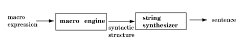

(43) Japanese Sentence Generator
Machine: UNIX machine
Environment: UNIX
Language: CESP, SICStusProlog
Source Code: 1.1 MB
Documents: Manual (Japanese)
Overview
Japanese sentence generator.
Configuration

Function
This sentence generator program is ported from the Japanese sentence
generator which is originally written in CIL(Prolog augmented by a
record-like structure, see [40]Lingistic Knouledge Description
Language), to CESP and SICStusProlog. The sentence generator provides
a function for generating a sentence form a intermediate expression.
The intermediate expression is a kind of frame structure written in
PST(Partial Specified Term). The sentence generator consists of two
module, macro expander and string synthesizer. Sentence generation is
done in the folowing sequence.
- 1. macro expansion
- The macro expander expands each macro expression in a given
intermediate expression,according to a corresponding expansion rule.
- syntactic structure ganeration
- After completion of macro expansion,the macro expander transforms
the intermediate expression into a structure nested list called
syntactic structure.
- morphological processing
- The string synthesizer transforms syntactic structure to a
sentence according morphological rules.
FTP
- Japanese Sentence Generator [390K]

www-admin@icot.or.jp